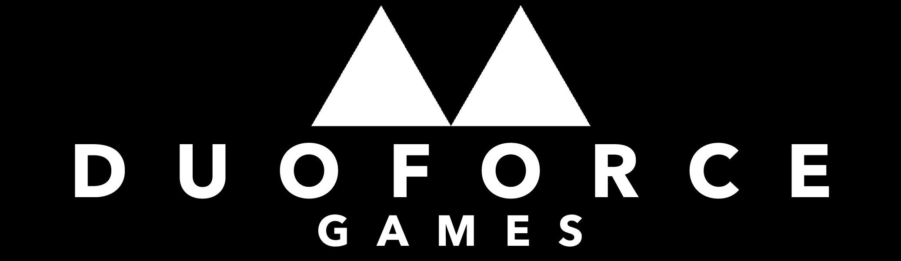
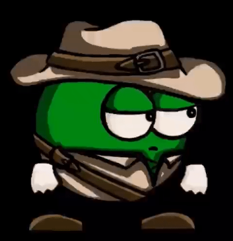

Rubens Programming Career
Home
Welcome to a site about my programming career. Here you will find my most important projects I made and the story of how I became a hobby game developer
Menu
Lego League
It kind of started when I was eight. I really wanted to say: my love for programming began when I was eight. But if I say that I would be very much lying. I have always been interested in building with lego's, spending hours building with it as a kid and still playing with it till my thirteenth. I even had a YouTube channel with over 30.000 views! You can check it out here. So when I was eight me together with a couple of friends joined the lego league: a competition where you must build and program a robot for a specific course to do the task that you were given. I really enjoyed building the robot. But programming it ... not so much. We never really got far with the race but still had a great time.
Lego League - Nov. 2013
Scratch
Felix Monster Level - Jan. 2017
My first Project
Almost 3 years later (a time when I did not interesting regarding to programming), I began my first lesson Informatics. At the time it wasn't my favorite school subject, but I didn't dislike it. After a few lessons I met scratch and got immediately addicted to it.

In scratch, I made my very first project/game, it was called: Felix monster level. Felix is a character which I would always draw as a kid. He with he's blue wooly skin and his (way to) long arms would feature in many projects of mine. But this game is really really bad. The physics are bad the graphics are bad and the gameplay is the worst, but I enjoyed making it.
Don't Touch The Arrows - Jan. 2017
A true classic
You saw it, my first game was bad. My second game however was in concept a little better. I named the game: Don't Touch the Arrows and your goal is to get the highest score by not dying to the arrows that came from the left side. The game is way too hard and just as broken as my first game (I've used the same player controller and physics). Although execution of the game is terrible, I liked the concept. This concept, this idea was the beginning of a big game I am currently working on called: JrJones. But you will hear more about this project in the chapter: The Revolution.
The Yellow Fish Company
You've might have seen it, the yellow fish at the beginning of the game or at the left of the screen. This is the logo of the Yellow Fish Company. It's a kind of game studio I created when I was 12. I have a fish actually named Yellow, and he looks exactly like he does on the logo. I even made a website in Weebly about him.
TANK - Feb. 2017⠀⠀
More masterpieces
In the My Projects page you can find my most notorious scratch projects. Or you can go to this page to see them all. The third game I created was TANK. It was first called TANK.io because I had high hopes of making it an io-game like agar.io (in scratch *sigh*). It's actually my best scratch game. It even has a boss fight!
TANK
A real programming language
Pixel Fight - Dec. 2018⠀
No more Scratch
My nineteenth project on Scratch was Pixel Fight. It's a two player game and I made it for a game jam. A game jam is an event where you make a game in a short amount with a special theme. I made this game in two days and I didn't really get the concept of a game jam back then.
The game has nothing to do with the theme and although I spend more than 8 hours on it, I spread it over 4 days and not 2. I began 2 days before the game jam started. This when I really saw the limitations of scratch. I spend more than 8 hours on a simple game that was barely working.
Scratch made things so much more complicated. So I wanted to switch to a real programming language.
⠀BurgerClicker 2 - dec. 2018
JavaScript
Instead of searching for "what programming language is best for games". I typed something like "best programming language" in google and read something about JavaScript and followed a YouTube tutorial. It was about making a cookie clicker clone in JavaScript. That was how my first game outside Scratch was born: BurgerClicker. I followed the tutorial and slapped the Yellow Fish Company logo on it.
I had a blast making this game. I liked it way more than scratch, but I wanted to make an action games and not only UI-based games. So unfortunately I never made anything besides Burger Clicker in a long time.
My Fish Yellow
The Revolution
Dani

1 year after I made BurgerClicker YouTube started recommending a YouTuber called Dani to me. Dani is a YouTuber who makes video's about game development. I began watching him a couple of months ago, and he still is one of my favorite YouTuber up to date. He wasn't as big back then. He now has 2 million subscribers but back then he had around 5000. In one video he was talking about his game engine: Unity.
WHY IS IT NOT WORKING!!

I downloaded Unity and looked up a platformer controller and found a tutorial by BlackThornProd. The tutorial was for beginners, but I was not a beginner. I was an absolute beginner. I didn't understand how to work with components and tie a script to an object. Now I know that that are the fundamentals and pretty important. I followed the tutorial and eventually I had a square that if you pressed space moved a little up and that did nothing. You could press space again but then still nothing happens. I was so frustrated that it wasn't working. I deleted the project and made a new and then tried again. Same result. I gave up.
Unity

A few months later I decided to tried again. This time I searched for Unity game development for absolute beginners. And found a tutorial playlist by Daniel Wood. The tutorial was very boring, but I enjoyed making the little game. I got back to my first project and saw the fault that I made. I still was a beginner, but I was getting better. The months after that I made a bunch of other platformer controllers. Experimenting with wall jumping, shooting and things like a dash. I wasn't getting anywhere but I once again enjoyed it a lot. It was so fun to see my own character jumping around. But after around 6 controllers I wanted to make a real game. But what should it be about?
Don't Touch the Arrows 2
I went through my old scratch games thinking about an idea for my new game. I always liked the concept of Don't Touch the Arrows. So I thought to do exactly that, just the game but with a little better graphics and better gravity and game-logic. I showed my idea to a friend Fabian, and he said that he liked the concept but that it needed to have a theme. And my art was terrible, so he said that he could do the art. That's how DuoForce Games was born.
JrJones
The game was going to have an archaeology temple theme and the main character was going to be JrJones, a parody of Indian Jones. In Don't Touch the Arrows I already had arrows, but we added the obstacles: stone, axe and a laser.
I immediately got to work on the game and made everything in a couple of weeks. But it was pretty boring. It needed to get harder overtime, so I implemented a system where every 30 points the four levels would get harder. And the following months I playtested a lot, checking if the difficulty everywhere was good. Midway 2019 I got it working, and you could play the game. It didn't have coins, no shop, no music, no animation but after the summer break I was busy with school and didn't work very much on the project. But then along came quarantine.
Quarantine
In March 2020 the lockdown begun in my country and I did almost nothing for school that period. I worked like 5 hours per day on my game and was making huge progress. A coin system was quickly made and Fabian created a (very annoying) music song for the game. Also, things like UI and a menu where added. Unfortunately after the quarantine process wasn't as fast anymore but slowly we were finishing our first ever good game.
Other Projects in that time
In 2020, I made some more things than only JrJones. For example a decimal to binary number converter and a player controller in JavaScript.
Orange Square - Sep. 2020
DecToBin - Aug. 2020